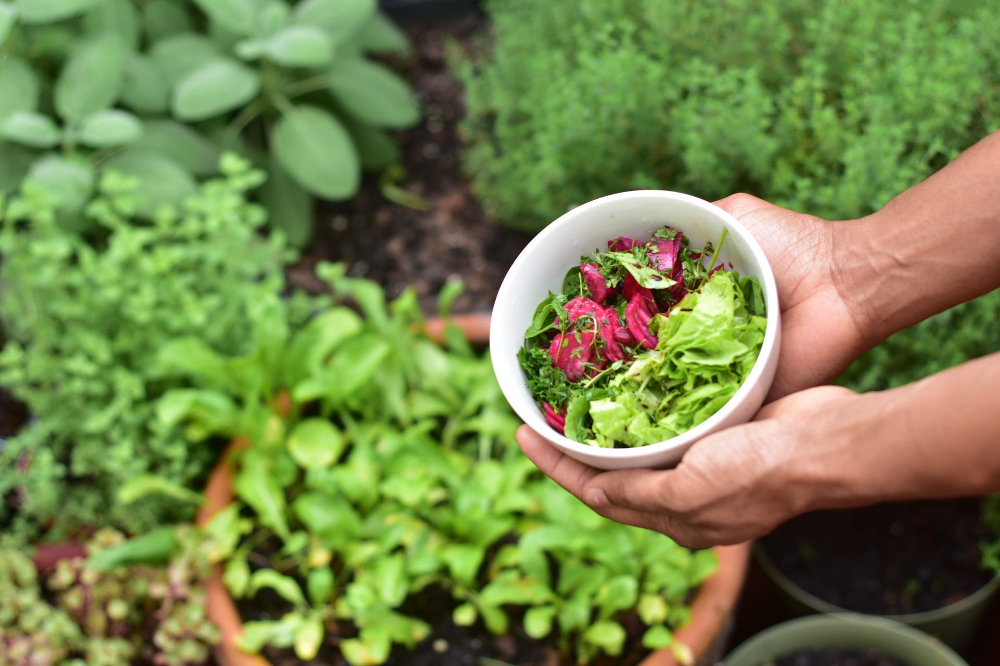
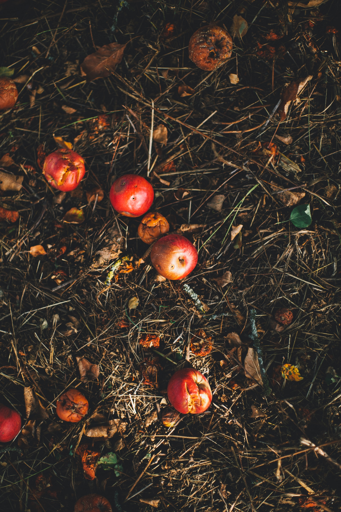
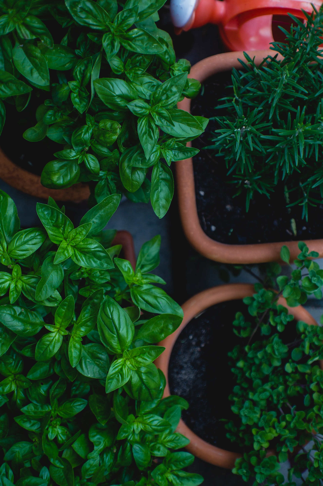
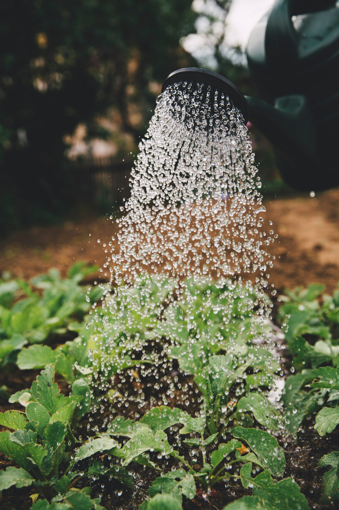

Potager Urbain, et si tu faisais le tien ?
(Avec un bonus permaculture pour préserver dame nature)
Etape 1 : Récupérer de la matière sèche
& garder vos épluchures

Profitez de vos balades en forêt ou au parc pour ramasser des feuilles mortes, brindilles de bois, gardez vos bouquets de fleurs séchées, demandez à vos voisins, familles ou amis avec un jardin de vous garder les déchets de tonte que vous laisserez sécher.
Quelques jours avant les plantations, gardez vos épluchures de fruits et de légumes.
Etape 2 : Privilégiez des gros pots

Prenez un pot ou une jardinière et privilégiez les gros pots.
En effet, plus il y a de volumes de terre, plus le pot va sécher lentement, plus les plantes vont s’épanouir et vous aurez de vraies productions.
Un grand bac créera un éco-système plus durable que de petites jardinières les unes à côté des autres qu’il faudra arroser tous le temps.
Mais bien sûr, si vous n’avez que des rebords de fenêtres, les jardinières feront aussi l’affaire. Pour vous faire des jardinières à moindre coût, pensez aussi à aménager de vieilles caisses en bois.
Etape 3 : Réalisez votre lasagne
Comme dans un composteur, alternez une couche de matière carbonées (paille, feuilles mortes, bouquets de feuilles séchés, bois morts, brindilles, pétales de fleurs) avec une couche d’azote c’est-à-dire vos épluchures fraiches.
Il faut toujours commencer par la couche carbonée. Elle absorbe ainsi le liquide de la matière verte et permet une belle aération.
Vous pouvez aussi mettre au démarrage des billes d’argiles si vous en avez ou des cailloux.
Etape 4 : Mouillez, tassez &
ajoutez du terreau

Une fois votre bac rempli au 2/3, mouillez et tassez un peu puis laissez reposer un jour ou deux.
Mettez sur votre lasagne du terreau, et immédiatement dans cette terre vos végétaux afin de bien ancrer les racines.
Vous n’avez pas besoin de mettre beaucoup de terre, 5 cm à 10 cm suffisent.
C'est prêt !
Les astuces de mamie la poire